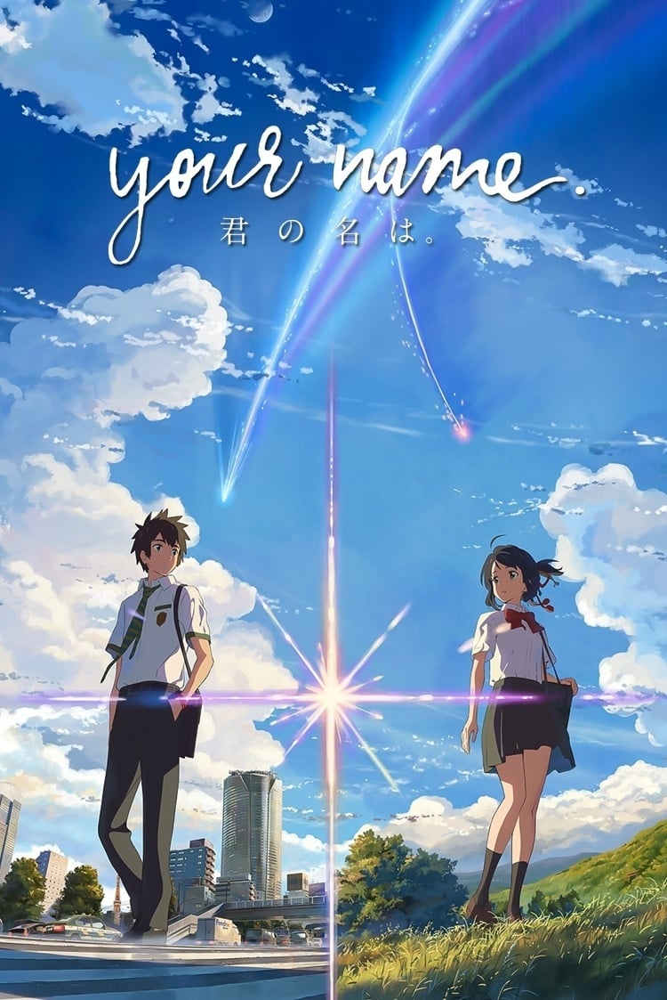
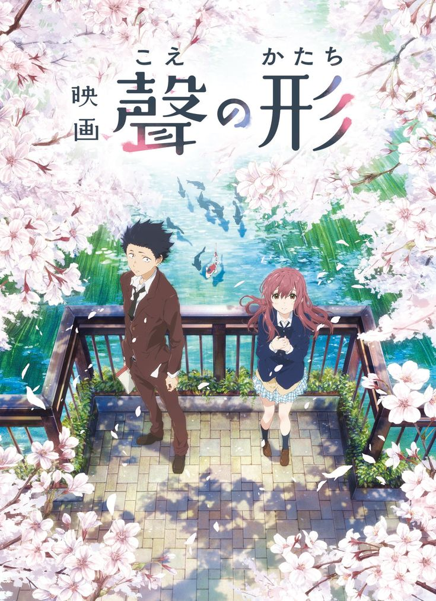
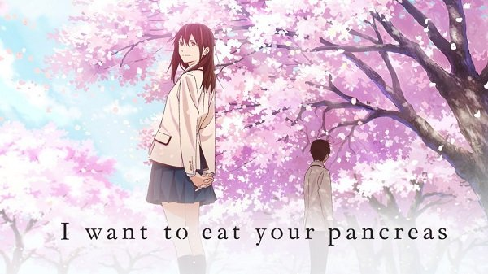

El filme comienza con un chico (Dylan O'Brien) dentro de un elevador en ascenso. Al llegar a la parte superior, se encuentra rodeado de
varios chicos a los que no conoce, quienes están en una pequeña área verde rodeada de grandes paredes de piedra. En medio del pánico y la
confusión, Alby (Aml Ameen), líder del área/claro, le explica al chico que al igual que todos los que están allí, perdió la memoria y fue
enviado desde el elevador/caja hasta ese lugar. En el transcurso del día, el chico conoce a Chuck (Blake Cooper) y a Newt (
Thomas Brodie-Sangster) mientras se va asociando al lugar. Al llegar la noche, se realiza una fiesta para celebrar la llegada del chico nuevo. Newt le
explica que por alguna extraña razón, todos fueron enviados al área/claro desde el elevador/caja, el cual está cargado de provisiones y
siempre trae a un chico nuevo cada mes. Igualmente, Newt comenta que algunos de los que están allí llevan hasta tres años encerrados,
puesto que la única manera de salir es cruzando el laberinto que se encuentra más allá de las paredes. Sin embargo, el mismo está lleno
de monstruos (apodados «penitentes»/«laceradores» por ellos) que atacan por la noche al cerrarse las puertas, por lo que solo se le
permite a los apodados «corredores» entrar en él, ya que son los únicos que lo conocen. Para subsistir, los habitantes/clarianos crearon
distintos grupos que realizasen determinadas tareas dentro del área/claro, entre estos están los encargados de los cultivos, la tala de
árboles, los médicos, los cocineros, los corredores, entre otros. Antes de que Newt continúe, el chico nuevo es invitado por Gally
(Will Poulter) a pelear con él de manera amistosa. En medio de la pelea, tras un fuerte golpe en la cabeza, el chico recobra parte
de su memoria y dice que su nombre es Thomas.
Al día siguiente, a Thomas se le asigna la tarea de ir a buscar fertilizante, por lo que se adentra en el bosque donde, de manera inesperada,
es atacado por uno de los corredores, Ben (Chris Sheffield), quien fue picado por un penitente/lacerador en plena luz del día. La picadura
contenía un virus que vuelve dementes a quienes lo poseen. Debido a que no tienen una cura y no pueden arriesgarse a que Ben mate a alguien,
los habitantes/clarianos se ven obligados a sacrificarlo encerrándolo en el laberinto durante la puesta de sol. Al otro día, Thomas continúa
adaptándose al lugar mientras al mismo tiempo intenta recordar su pasado. En el área/claro se crea un alboroto luego de que casi llegando la
noche, Alby y el líder de los corredores, Minho (Ki Hong Lee), se adentrasen en el laberinto y aún no hubiesen regresado. Todos se reúnen en
la entrada principal del laberinto esperando que regresen y, sorpresivamente Minho aparece arrastrando a Alby, quien ha sido picado, lo cual
es algo inusual porque los penitentes/laceradores no suelen atacar en el día. Sabiendo que no saldrían a tiempo, Thomas entra en el laberinto
mientras las puertas se están cerrando, por lo que al caer la noche queda encerrado junto a Alby y Minho. Dado que Alby es incapaz de moverse
por su cuenta, Thomas y Minho lo llevan a un lugar donde puedan esconderlo hasta llegar el amanecer, pero son atacados por un penitente.
Thomas logra esconder a Alby y a su vez matar al penitente/lacerador escapando junto a Minho, siendo el primer habitante/clariano en lograrlo.
Al amanecer, los tres salen del laberinto y mientras Alby se mantiene inconsciente, los habitantes/clarianos realizan una junta para castigar
a Thomas, puesto que ingresó al laberinto sin ser un corredor, lo cual va contra sus reglas. Muy molesto por su intento fallido de preservar
el orden en el área/claro, Gally exige que se le dé un fuerte castigo. Antes de que pudiesen decidir algo, la junta se ve interrumpida por el
elevador/caja que comienza a subir de forma inesperada, y en él hallan a la primera chica (Kaya Scodelario) que se haya visto, con una nota que
aseguraba que ella sería «la última». Mientras ella se mantiene inconsciente, Thomas y Minho exploran junto a tres habitantes/clarianos el
laberinto, para buscar los restos del penitente/lacerador que mataron la noche anterior. En él descubren un dispositivo que marcaba el número
siete. Al volver al área/claro, prosiguen la junta donde Newt sentencia a Thomas a una noche en «el pozo»/«el trullo» (una especie de prisión)
y seguidamente lo nombra corredor, por consejo de Minho. Más tarde, la chica despierta y causa un alboroto hasta que Thomas logra razonar con
ella y descubre que su nombre es Teresa. Además de la nota, Teresa llevaba consigo dos aparentes antídotos, uno de ellos es usado en Alby quien
se encontraba alucinando por la picadura que recibió. Esa noche, Thomas debe cumplir su sentencia impuesta por Newt, por lo que pasa la noche
en el pozo/trullo. Al día siguiente, él y Minho entran al laberinto y son guiados por el dispositivo del penitente hasta una presunta salida
ubicada en el sector siete, pero al intentar abrirla, el sector comienza a cerrarse y se ven obligados a abandonarlo.
Al volver, comienzan a explicar todo lo ocurrido, pero descubren que Alby ha despertado y dice que Thomas siempre fue el favorito de "ellos" CRUEL
, preguntado que hacía el ahí . En eso, se crea un alboroto en el área/claro puesto que las puertas del laberinto no se cerraron. Por
el contrario, se abrieron tres nuevas, de las cuales emergieron docenas de penitentes/laceradores que mataron a gran parte de los habitantes
/clarianos, entre estos a Alby y a Zart (Joe Adler). Al amanecer, Gally culpa a Thomas de todo lo ocurrido, dado que desde su llegada, comenzaron
a ocurrir cosas fuera de lo común. Él y los sobrevivientes intentan sacrificarlo junto a Teresa, pero gracias a la ayuda de Chuck, Newt y Minho
logran salvarse. Thomas asegura que ese mismo día pensaban salir del laberinto por la presunta salida que él y Minho encontraron el día anterior.
Gally se rehúsa a ir afirmando que él reconstruiría toda el área/claro, puesto que ese era su hogar. Él y unos pocos habitantes/clarianos se
quedan, mientras que Thomas, Teresa, Chuck, Newt, Minho, Sartén/Fritanga (Dexter Darden),
Jeff (Jacob Latimore), Winston ( Alexander Flores),
Clint (Randall D. Cunningham) y otros habitantes se adentran en el laberinto. Enfrentándose a los penitentes/laceradores, la mayoría consigue
llegar a salvo a unos túneles que los guiaban a un laboratorio. Allí encuentran una grabación donde Ava Paige (Patricia Clarkson) relata todo
lo ocurrido. Hace varios años, hubo unas erupciones solares que arrasaron con gran parte de la población del mundo. Al mismo tiempo, un virus
apodado «la llamarada» / «el destello» escapó de un laboratorio e infectó a buena parte de la población sobreviviente. Todos los países que
subsistieron, crearon una agencia llamada CRUEL, a la cual se le dio el permiso de experimentar con los seres humanos para buscar una cura, este era el motivo del laberinto.
Cuando concluye la grabación, Gally aparece inesperadamente en el laboratorio con una pistola y amenaza con matar a Thomas por haber destruido
su hogar. Pese a que Thomas intenta razonar con él, Gally se veía bajo los efectos del virus inyectado por los penitentes/laceradores. Cuando
Gally dispara, Minho le arroja una lanza en el pecho y lo mata casi instantáneamente. Simultáneamente, Thomas descubre que Chuck recibió el
disparo por haberse interpuesto un segundo antes para salvarlo. En ese momento, un grupo de soldados irrumpen en el laboratorio para escoltar
a Thomas y a los demás hasta un área segura, dejando a Chuck morir desangrado. El filme termina con el epílogo del libro, donde Ava expone a
los miembros de CRUEL que la primera prueba ha sido todo un éxito, y ya están listos para la segunda fase.
Kimi No Na Wa (Your Name)

Director:
Makoto Shinkai.
Fecha de Estreno:
Duracion:
106 min.
Género:
Anime,Drama,Fantasía,Romance.
Recaudacion:
USD $357,986,087
Sinospsis:
Mitsuha Miyamizu es una chica de secundaria que vive en la pequeña ciudad de Itomori, cerca de la región de Hida. Está aburrida de la vida
en el campo y pide un deseo el cual es ser un chico y vivir en [Tokio]. Ella comienza a cambiar de cuerpo intermitentemente con Taki Tachibana,
un chico de secundaria de Tokio, cuando ambos duermen. Pronto, comienzan a comunicarse escribiéndose mensajes en papel, teléfonos y, a veces,
en la piel del otro. Mitsuha hace que Taki desarrolle una relación con su compañera de trabajo Miki, de quien está enamorado y a quien no se
atreve a hablarle, mientras que Taki hace que Mitsuha se vuelva popular en la escuela.
Un día, Taki, en el lugar de Mitsuha, acompaña a su abuela y hermana a dejar el ritual alcohol kuchikamizake, hecho por Mitsuha, como una
ofrenda en el santuario familiar en la cima de una montaña a las afueras de la ciudad. Se cree que el santuario representa el cuerpo del
dios guardián del pueblo que gobierna las experiencias y conexiones humanas. La última nota de Mitsuha le cuenta a Taki acerca del cometa
que se espera que pase sobre la Tierra el día del festival de su ciudad.
Al día siguiente, Taki se despierta en su propio cuerpo. Después de una cita infructuosa con Miki, intenta llamar a Mitsuha, pero no puede
comunicarse con ella y el cambio de cuerpos termina de darse. Decide encontrarse con ella directamente, pero sin saber el nombre de la ciudad,
y tiene que confiar en sus recuerdos del paisaje. El dueño de un restaurante en Hida reconoce a Itomori a partir del dibujo hecho por Taki y
le cuenta que el paso del cometa ocurrió tres años atrás, pero que éste se dividió inesperadamente en dos; la pieza más grande siguió moviéndose,
pero la más pequeña se estrelló contra la Tierra y destruyó la ciudad. Viajando hasta el lugar, Taki observa el sitio del cráter y no puede creer
que Mitsuha haya estado muerta todo este tiempo, pero de pronto sus mensajes en su teléfono desaparecen y sus recuerdos de ella comienzan a
desvanecerse. Taki encuentra el nombre de Mitsuha en los registros de víctimas mortales y descubre desde la fecha del desastre que sus líneas
de tiempo estuvieron separadas por tres años.
Taki va al santuario para beber el sake de Mitsuha de la botella, con la esperanza de reconectarse con su cuerpo y advertirle sobre el ataque
del cometa. A través de una visión, Taki descubre que una chica que conoció en el tren tres años antes era Mitsuha: sin saber que estuvieron
separados durante tres años. Ella, habiéndose enamorado de él, había conocido a su yo pasado mientras trataba de reunirse con él personalmente.
Él se despierta en cuerpo de ella la mañana del festival de la ciudad. La abuela de Mitsuha deduce lo que sucedió y le dice que el cambio de
cuerpo es parte de la historia familiar y de los cuidadores del santuario. Taki convence a sus amigos Tessie y Sayaka para ayudar a todos a
evacuar la ciudad, desactivando la subestación eléctrica y transmitiendo una falsa alerta de emergencia, pero el plan falla. Al darse cuenta
de que Mitsuha está en su cuerpo en el santuario, Taki vuelve a buscarla.
Mitsuha se despierta en el cuerpo de Taki en el santuario. Cuando Taki llega allí justo cuando el sol se está poniendo, los dos perciben la
presencia del otro, pero están separados temporalmente por tres años. Sin embargo, cuando cae el crepúsculo (referido en la película como la
"hora mágica"), regresan a sus propios cuerpos y se encuentran. Intentan escribir sus nombres en cada mano para recordarse, pero el crepúsculo
pasa y Mitsuha desaparece antes de que ella pueda escribir el suyo. Antes de convencer a su padre de evacuar la ciudad, Mitsuha se da cuenta
de que sus recuerdos de Taki comienzan a desvanecerse y descubre que escribió "Te amo" en su mano en lugar de su nombre. A pesar de la evacuación,
la pieza del cometa se estrella contra la Tierra y destruye la ciudad. Taki se despierta a su debido tiempo, pero ya no recuerda nada.
Cinco años después de graduarse de la universidad, Taki busca trabajo. Siente que perdió algo importante y se entera de que los habitantes
de la ciudad sobrevivieron siguiendo la orden del alcalde. Un día, Taki y Mitsuha se cruzan cuando sus trenes se ponen en paralelo, y se
ven obligados a desembarcar y buscarse el uno al otro. Finalmente se encuentran en las escaleras del
Santuario Suga.
Cuando inicialmente se cruzan, Taki le dice a Mitsuha que siente que la conoce de antes y ella responde que se siente de la misma manera.
Su conexión se ha restablecido, derraman lágrimas de felicidad y simultáneamente preguntan por sus nombres.
Koe no Katachi (A Silent Voice)

Director:
Naoko Yamada.
Fecha de Estreno:
Duracion:
130 min.
Género:
Romance, Drama, Escolar, Comedia.
Recaudacion:
USD $19,560,000
Sinospsis:
Un chico llamado Shouya Ishida pone sus asuntos en orden y camina hacia un puente, con la intención de suicidarse. Recuperando sus
sentidos en el último minuto, recuerda sus días en la escuela primaria y los eventos que lo llevaron a este punto en su vida. En
aquellos días, Shouya era un niño indiferente, uno que veía a sus compañeros estudiantes como una forma de evitar el aburrimiento.
La entrada de una nueva estudiante llamada Shouko Nishimiya en su clase despierta su interés: ella es sorda. A pesar de su
discapacidad, hace todo lo posible por vivir normalmente y relacionarse con la clase. Sin embargo, los otros estudiantes y el maestro
llegan a creer que su presencia está trastornando el equilibrio social.Piensan que ella los está imponiendo a través de su discapacidad.
Shouya, que la considera extraña, comienza a intimidarla y acosarla sin fin. La clase, más entretenida que sorprendida, no interviene
en la situación, un día, mientras estaba sola, Nishimiya es atacada con piedras pequeñas por Shouya, quien le dice que terminarán
odiandola, Nishimiya, entonces se acerca y le hace una seña con sus manos, mientras balbucea la palabra "amigo", sin embargo, Shouya,
asqueado le lanza tierra del suelo al rostro. Tiempo después, una maestra de la sala de audición notifica que tomaran tiempo de cada
clase para aprender el lenguaje de señas y facilitar la integración de Shouko al grupo, sin embargo, solo una persona está interesada
en aprenerlo, una niña llamada Miyoko Sahara, esto causa que los demás niños comiencen a intimidar a Sahara, quien deja de ir a la escuela
al no poder soportar mas burlas, Shouya, entonces escribe un mensaje en el que culpa a Nishimiya de hacer que Sahara se fuera, sin
embargo lo borra cuando ella se da cuenta de ello, al haber perdido a su protectora, Nishimiya se volvió mas vulnerable a las
intimidaciones de Shouya, que la acosa aun más que antes.
Un día, Shouya arranca los audífonos de Nishimiya con tanta fuerza que provoca que le sangren los oídos. Poco después, Shouya camina
con sus amigos hasta que ae encuentra con ella, quién se disculpa con un mensaje de su cuaderno y le hace la misma seña que le había
hecho antes, sin embargo, Shouya se muestra reacio ante ella y lanza su cuaderno a una fuente cercana, mientras que Nishimiya se mete
para sacarlo. Tiempo después, el director confronta a la clase al recibir una llamada de la madre de Shouko quién sospechaba que su
hija sufría acoso, entonces el maestro, de repente enfurecido, señala a Shouya como el culpable. Shouya nombra a sus amigos como cómplices,
pero se vuelven contra él, negando vehementemente su participación. Pronto, la intimidación de la clase se dirige hacia él, agrediendolo
y sometiendolo al mismo trato que le dio a Shouko, un día su madre lo confronta y lo lleva a casa de Shouko para pedir perdón a su madre,
cuando están a punto de irse, el niño nota una herida que su madre tiene en una de sus orejas. Tiempo después, Shouya encuentra a Shouko
haciendo algo en su escritorio por lo que Shouya la ataca y ella intenta explicarle que hace lo mejor que puede, involucrandose en un
aparcado físico en el que Nishimiya balbucea a Shoya que la deje en paz. Posteriormente, Nishimiya se transfiere a otra escuela y Shouya
descubre que ella estaba borrando mensajes de odio que sus compañeros de clase dejaron en tiza en su escritorio. Shouya se encuentra solo,
relegado al papel de un paria atormentado. Después de ser arrojado a un estanque por sus compañeros de clase, encuentra la libreta de
Nishimiya, que había arrojado allí un tiempo antes.
Ahora en la escuela secundaria, Shouya sigue siendo un rechazo social, ya que pasado a menudo es mencionado por sus antiguos amigos, algo
que ha llegado a aceptar como un mero castigo. Lleno de culpa, vergüenza y ansiedad, bloquea las caras de quienes lo rodean con una "X"
color azul, incapaz de mirarlos a los ojos. Él trabaja duro para pagar a su madre por el dinero que ella tuvo que pagarle a la madre de
Shouko para reemplazar los numerosos audífonos que hecho a perder. Él visita el centro de lengua de señas para devolver el cuaderno de Shouko,
una vez lleno de agua, con la esperanza de hacer las paces, él le entrega su cuaderno mientras habla con ella en lenguaje de señas, lo
que sorprende mucho a la chica, por lo que Shouya le dice que estaba aprendiendo el lenguaje de señas, pero cuando él le dice que quiere
ser amigos, recuerda que una vez le hizo los mismos gestos con la mano, finalmente comprendiendo que ella solo había querido ser su amiga.
Al día siguiente, su madre lo confronta por haber intentado suicidarse, amenazando con quemar el dinero que le había repuesto, mientras
Shouya, sumido en sus pensamientos recuerda la herida en el oído de su madre, revelándose que arrancó uno de sus aretes para saldar la
deuda de los audífonos que destruyó, suplicante, Shouya le jura que no volverá ha hacerlo, sin embargo, en medio del alivio, la madre de
Shouya termina quemando accidentalmente el dinero.
Durante clase, se ve como es que los compañeros de Shoya no le hacen caso alguno,
hablando de el a sus espaldas y no acercándosele para nada. Al día siguiente, en la escuela, Shouya ve como alguien está acosando a otro
chico de risos, tratando de robarle su bicicleta, por lo que decide intervenir ofreciendole su propia bicicleta al chico acosador, sin
embargo descubre que se la ha robado, por lo que decide volver a pie a casa. En su camino, Shouya descubre un cupón de una panadería,
por lo que decide ir a comprar pan y con ese pretexto visitar a Shouko (pues ella le había comentado que solía ir a alimentar a las
parcas todos los martes). Shouya va a visitar a Nishimiya, pero entonces se encuentra con un chico menor en su salon de clases, quien
no le permite ver a Nishimiya. De vuelta en casa, Shouya se sorprende al ver que el mismo chico que ayudó estaba de vuelta con su bicicleta,
el chico, de nombre Tomohiro Nagatsuka le explica que la encontró en un campo de arroz y pudo dar con Shouya gracias a que tenía la dirección
escrita, Shouya entonces quita la cruz imaginaria del rostro de Nagatsuka y le invita del pan que compró para Nishimiya. Al día siguiente,
Nagatsuka invita a Shouya a pasar tiempo juntos después de clase, asegurando que ya eran amigos, a lo que Shouya accede con gusto.
Mientras están juntos, Nagatsuka le pone de apodo Yasho, y al encontrarlo pensativo le dice que puede contarle lo que sea, es entonces
que Shouya se abre con Nagatsuka, diciendo que no sabía lo que era un verdadero amigo y si había algún requisito para ello, ante esto,
Nagatsuka le pide su mano, haciendo entonces un "saludo de mejores amigos" mientras le asegura que para ser un amigo no hay requisitos
y está mucho más allá de la lógica y la razón, y que si hubiera requisitos, sería ridículo.
Al día siguiente, Shouya vuelve con otra
hogaza de pan para Nishimiya, sin embargo el mismo chico menor se lo vuelve a negar, asegurando salir con Shouko, mienrras le dice que
si busca simplemte satisfacerse a sí mismo no debería volver, antes de cerrarle la puerta en la cara, Nagatsuka aparece y obliga al niño
a permitirle a Shouya ver a Nishimiya, involucrandose en un pequeño altercado físico entre los dos, mientras Shouya le ruega a Nagatsuka
ya irse de allí, pues no quiere causar problemas, Shouya entonces sale corriendo hacia el puente, siendo seguido por Nishimiya, en el
balcón del centro, el niño y Nagatsuka espían su conversación en lenguaje de señas que el niño traduce para Nagatsuka, mientras tanto,
Shouya le ofrece a Nishimiya la hogaza de pan que consiguió para alimentar a las carpas y entre los dos comienzan a alimentarlas,
sin embargo, Nishimiya decide abrir y comenzar a leer el cuaderno, lo que pone bastante nervioso a Shouya y le pide que se lo devuelva
debido a las cosas horribles que estaban escritas ahí, sin embargo el cuadernp accidentalmente al río y Shouko salta detrás de él, al
igual que Shouya, cuando finalmente salen del río, Shouya se disculpa con Nishimiya y le devuelve el cuaderno. Mienteas tanto, el niño
fotografía el salto de Shouya, por lo que al no aprobar la relación que podrían tener Nishimiya y Shouya, esa misma noche crea un perfil
falso de Shouya y publica la imagen en línea.
Cuando la foto llega a la administración de la escuela, Shouya es suspendido durante una semana ya que saltar ahí está prohibido, sin
embargo. En lugar de enojarse, Shouya invita a Yuzuru para que se quede en su casa después de haberla visto durmiendo en el parque,
apareciendo sin hogar. Cuando Yuzuru se va en medio de la noche, Shouya la persigue y le dice que está realmente arrepentido por la
forma en que trató a Shouko, y Yuzuru le revela su verdadera identidad. La madre de Shouko y Yuzuru, Yaeko, se da cuenta de que sus
hijas se están reuniendo con Shouya y exige que se detengan, pero se niegan a hacerlo.
Shouko expresa su deseo de volver a conectarse con Miyoko Sahara, la única compañera de clase que fue amable con ella en la escuela
primaria. Shouya y Shouko toman el tren para visitarla. Por casualidad, Shouya también se encuentra con Naoka Ueno, uno de sus antiguos
cómplices de intimidación. Aunque Naoka se disculpa con él en el pasado, sigue siendo antagónica con Shouko, culpándola por lo sucedido.
Shouko pronto le da un regalo a Shouya y le confiesa que siente algo por él, pero debido a que trata de expresar su afecto, en lugar de
cerrarlo, Shouya no la entiende. Preocupada porque el malentendido la molestó, Shouya la invita a ir a un parque de diversiones con él
y sus antiguos amigos. Allí, Ueno finalmente expresa sus sentimientos hacia Shouko. De regreso a la escuela, desesperada por permanecer
intachable, Miki Kawai, otra compañera de clase, expone el pasado de Shouya a los estudiantes restantes que todavía no se daban cuenta de
ello, mientras minimizaba su propia participación. Poco después, el grupo tiene una confrontación acalorada sobre el nivel de responsabilidad
de cada miembro, que termina con Shouya llamando cruelmente a cada uno de ellos por lo que realmente son. Uno por uno, dejan atrás a Shouya,
Shouko y Yuzuru.
Para animar a Shouko después de la muerte de su abuela, Shouya lleva a Shouko a visitar el campo, donde comienza a comprender cuánto se
culpa por todo lo que le ha sucedido.Desesperada por tranquilizar y cambiar su mentalidad, Shouya se las arregla para reunirse con las
hermanas una y otra vez. Shouko eventualmente lo invita a su casa, donde ayuda a las hermanas a prepararse para lo que resulta ser el
cumpleaños de su madre.
Durante el festival de fuegos artificiales, Shouko regresa a su departamento bajo el pretexto de terminar algunas tareas escolares.
Yuzuru luego lo envía allí para obtener su cámara. Cuando llega, encuentra a Shouko de pie en el balcón, a punto de arrojarse a la
muerte. Shouya tiene éxito en agarrarla antes de que ella se caiga y tira de ella hacia atrás, pero como consecuencia cae al agua
en el río. Cuando cae en coma, provoca que todos sus compañeros de clase lleguen a un punto crítico.
En el hospital, Yaeko y Yuzuru llegan para ver a la madre de Shoya y al instante se arrodillan y piden perdón, presumiblemente debido
al resentimiento que sentía por Shouya. Yuzuru se culpa por el intento de suicidio de Shouko. Afuera, Ueno acosa y grita a Shouko,
culpándola del estado de coma de Shouya hasta que Yaeko la quita de su hija mientras la madre de Shouya consuela a Shouko.
Una noche, Shouko sueña con recibir una visita de despedida de Shouya. Horrorizada, ella corre hacia el puente donde alimentan al
koi y se derrumba en lágrimas. Shouya, despertando de su coma en estado de pánico, tropieza con el puente él mismo y la encuentra
allí, acurrucada en la desesperación. Él se disculpa formalmente con ella por la forma en que la trató y por las muchas cosas que
hizo, lo que puede haber causado que se odie a sí misma. Él le pide que deje de culparse a sí misma, y también admite que, aunque
una vez consideró renunciar a sí mismo y poner fin a su propia vida, desde entonces ha decidido no hacerlo. Shouya luego le pide
que lo ayude a seguir viviendo.
Cuando Shouya va al festival escolar con Shouko, descubre cuánto le importan sus amigos de la escuela primaria. Shouko se disculpó
con sus amigos en un esfuerzo por reconstruir el grupo. Después de que Shouya regresa a la escuela, finalmente logra mirar las
caras de las personas, se da cuenta de que ya ha encontrado la redención y el perdón por fin.
Kimi no Suizō o Tabetai (I want to Eat Your Pancreas)

Director:
Shinichirō Ushijima.
Fecha de Estreno:
Duracion:
108 min.
Género:
Drama, romance, recuentos de la vida.
Recaudacion:
USD $33,748,006
Sinospsis:
Haruki es un misterioso y solitario estudiante de secundaria al que le encanta la lectura, ocupando casi todo su tiempo en la
lectura y trabajando en la biblioteca, un día encuentra un libro de bolsillo
en el hospital.
Su título es "Viviendo con la Muerte". Resulta ser el diario de
una compañera de clase, llamada Sakura Yamauchi, una chica de 17 años muy alegre y vivaz a la que le encanta pasar el tiempo
con sus amigos y le gusta bromear, ella escribe en su diario que, debido a su enfermedad pancreática, le quedan solo unos cuantos
meses de vida. Esto sorprende e intriga profundamente a Haruki, ya que Sakura nunca le ha revelado a nadie su estado, lo que hace
que surja una amistad entre ellos muy especial, desvelando la difícil circunstancia por la que atraviesa Sakura no solo en relación
a su enfermedad, sino también a otros factores que convierten su día a día en una cruel pesadilla.
A pesar de esto, Sakura tiene la intención de mantener una vida escolar normal y, por lo tanto, se siente atraída por Haruki debido
a su reacción relativamente imperturbable a su condición. Empiezan a pasar tiempo juntos y se hacen amigos.
En un receso escolar, Sakura invita a Haruki a un viaje en tren a Fukuoka durante el cual los dos juegan a la verdad o el desafío y
finalmente comparten una cama en su hotel. Después, los amigos y compañeros de clase de Sakura sospechan y se sienten resentidos por
la recién descubierta cercanía de Haruki con ella. Los dos comienzan a hacer las actividades de la lista de deseos de Sakura juntos,
hasta que Sakura es hospitalizada de repente. Durante su hospitalización, los dos se escabullen para ver los fuegos artificiales juntos.
Cuando Sakura es dada de alta, le envía un mensaje a Haruki invitándolo a almorzar, pero no aparece en su lugar de encuentro. Más tarde
esa noche, Haruki está viendo las noticias con su familia, lo que revela que Sakura fue apuñalada cuando se dirigía a encontrarse con él
y que está muerta. Él se derrumba y no asiste a su funeral.
Más tarde, visita a su madre y le pide el diario de Sakura. Su madre lo reconoce y revela que Sakura le dejó una carta. La carta le dice
que lleve el diario y que haga que su mejor amiga Kyouko lo lea, ya que no estaba al tanto de la enfermedad de Sakura y odiaba a Haruki.
Poco después de que Haruki lee la carta, inmediatamente rompe a llorar, ya que nunca antes había sentido tanta pena por una sola persona.
Antes de irse, la madre de Sakura pregunta su nombre. Él responde "Haruki" a lo que ella responde, "entonces ustedes dos estaban destinados
a ser", explicando el significado de sus nombres, Haruki (árbol de primavera) y Sakura (flor de cerezo). Se encuentra con Kyouko, quien
niega que Sakura le haya mentido alguna vez, pero después de leer el diario, ella se escapa. Haruki corre tras ella y le pide que sea su
amiga, porque fue Sakura quien lo hizo abrirse a la gente y él quiere honrar su memoria. La película termina con Haruki y Kyouko visitando
la tumba de Sakura un año después, los dos se han hecho amigos.
Kazuma Satō es un hikikomori que vive en un sector rural de
Japón. Un día, decidido ir a comprar lo antes posible un videojuego, sale de casa y de regreso
observa a una chica que sería atropellada por un camión y hace lo impensable para él, salvándola, y muriendo de forma heroica. O eso creía,
puesto que realmente no fue atropellado y murió de un susto al pensar que lo había atropellado un camión, el cual ni siquiera era un camión
y solo era un lento tractor que pasaba saludando a la joven que tampoco necesitaba ayuda, y solo la empujó violentamente. Su muerte fue tan
patética que incluso los médicos que lo revisaron se burlaron de él, su familia también lo hizo, y todo en cuánto supo de su muerte se rio.
Mágicamente, despierta en un salón increíble y desconocido, en el que encuentra a una hermosa diosa llamada Aqua, que le ofrece, luego de burlarse
de su ridícula muerte, darle una nueva vida en un universo paralelo y de fantasía, en el que tendrá aventuras increíbles, enfrentará monstruos
terribles, aprenderá poderosas magias, y deberá derrotar a un rey demonio que es el gobernante de ese mundo, alzándose como el héroe entre héroes,
por lo cual le brindará un arma, habilidad u objeto (incluso ser) que lo ayude en su aventura.
Personajes principales
Kazuma Satō:
Es el protagonista principal de la serie, es un adolescente japonés de 17 años quien se convirtió en un hikikomori después de tener su corazón
roto por su amiga de la infancia durante la secundaria. Él fue transportado a un realidad paralela de fantasía después de morir de shock, forzando
a Aqua a ir con él después de que ella lo irritara con su actitud. Después de unirse al gremio de aventureros en el mundo de fantasía, él inicialmente
ignado como comerciante debido a su atributo de buena suerte, sin embargo él pidió ser asignado como un aventurero la cual, a pesar de ser una
de las clases de rango más bajo, le permite aprender varias habilidades de otras clases, pero a un costo incrementado. Pronto se da cuenta de
que solo su conocimiento de la fantasía no lo ayuda en una tierra que constantemente logra desafiar sus expectativas. Un hombre que solo quiere
vivir un fácil y decente estilo de vida, sin importar de que tiene el hábito de actuar desinteresadamente a pesar de sus quejas y a regañadientes
se mete en una variedad de desafíos no deseados a su vida diaria. Con sus poderes, Kazuma aprende habilidades básicas como robar, arquería,
detección de monstruos, y magia básica. La habilidad principal de Kazuma es "Steal", que le permite robar un objeto al azar de su oponente,
mas para su sorpresa, solo puede robar la ropa interior femenina.
Aqua:
También conocida como "La diosa de las fiestas", es una diosa del agua quien juzga a las almas de jóvenes que murieron en Japón para enviarlas
a un nuevo mundo similar a un RPG, hasta que Kazuma se la lleva con él. Ella es una chica simple y energética a quien le gusta recibir reverencias
por sus estadísticas y se emociona fácilmente. Es demasiado engreída, por lo que se queja de la vida sencilla que tiene como aventurera en más
de una ocasión, aunque en el fondo a ella le agrade. Después de unirse al gremio de aventureros en el mundo de fantasía, ella es designada para
la clase Arcipreste por el gremio, pero prefiere atacar directamente en vez de sanar a sus
compañeros debido a sus elevadas estadísticas. Como una Arcipreste y una diosa, ella es poderosa contra demonios y muertos vivientes, además
de ser capaz de revivir gente recientemente muerta y purificar las reservas de agua. En lugar de aprender habilidades que beneficiarían a su
grupo, ella gasta la mayoría de sus puntos de habilidades en aprender bromas para sus compañeros. A pesar de que normalmente trae problemas con
ella, Aqua es de muy buen corazón, pero tiende a traer más mal que bien en sus intentos de hacer las cosas mejor. Tiene varias deudas con el
gremio de aventureros debido a daños a la ciudad y gasto en alimentos y licor.
Megumin
Es una Archimaga quien es descendiente de la raza de Demonios Carmesí; poderosos humanoides quienes
poseen cabello negro y ojos rojos, además de portar características de chūnibyō.
Una chica de 14 años muy dramática que habla el dialecto japonés en un estilo antiguo y usa un parche en el ojo a pesar de tener los dos
ojos normales. Como Darkness, a pesar de ser una Archimaga, ella solo puede usar el hechizo "Explosión". Siendo conocido como el más poderoso
hechizo ofensivo en el mundo, se deshace de cualquier cosa en un gran área, pero ella solo puede usarlo una vez al día, ya que este drena
casi todo su mana inmediatamente después de utilizarlo, causando que no pueda mover ni un músculo (obligando a Kazuma a cargarla la mayoría
de veces). Megumin se rehúsa a aprender cualquier otro hechizo a pesar de la insistencia de Kazuma. Agresiva y competitiva, ella es considerada
la segunda miembro más problemática del equipo en la opinión de Kazuma.
Darkness
Cuyo verdadero nombre es Lalatina Dustiness Ford, es otra aventurera que tiene problemas en encontrar un equipo como Megumin, es una paladín
de 19 años de edad quien posee una poderosa ofensa y defensa, pero le falta la precisión para acertar sus ataques. Ella tiene una gran
resistencia y es capaz de resistir muchos golpes, que es posiblemente debido a que tiene un fetiche
por el daño que le ocasionen; ella sueña con sufrir serios golpes de monstruos o casarse con un esposo abusivo. A pesar de su fetiche ambiguo,
ella tiene un noble corazón, y se preocupa profundamente acerca de la gente y en ser un buen modelo de rol para otros; a pesar de que sus
tendencias masoquistas tienden a meterse en el camino de eso. Luego se revela que ella es una noble hermosa de la influyente familia Dustiness,
y que se convirtió en paladín para desafiar los deseos de su padre.